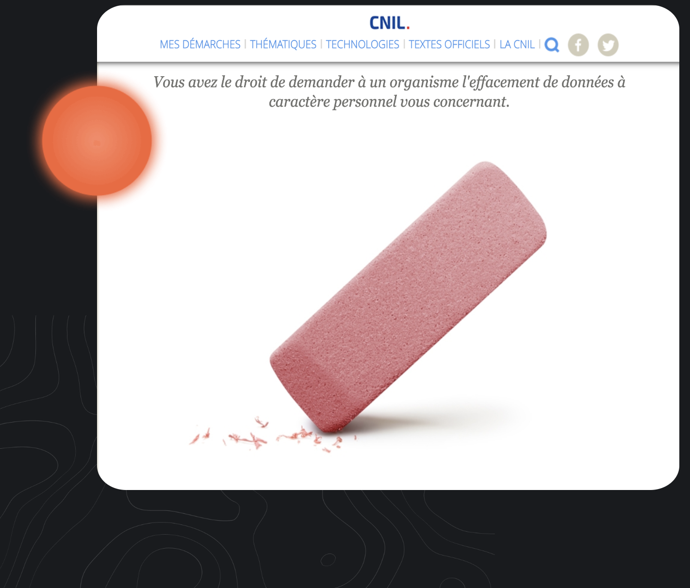

Find Me

vision
On the Internet, information circulates quickly and is permanent, which is why we must pay particular attention to the traces we leave.
service
the right
to deletion

There is very little information about me on the internet. I could have appealed to my right to erasure (request the deletion of information about me published on the internet). But I only contacted the site manager.

Google
Research
I also took care not to appear on any google searches. In case of a job interview, this kind of research can be harmful to the applicant. So I don’t want to take any risks.
Social
Media
I’m not a big fan of social media. Even if I use them I am against exposing his life on social media, which is why no one can find private or compromising information about me.